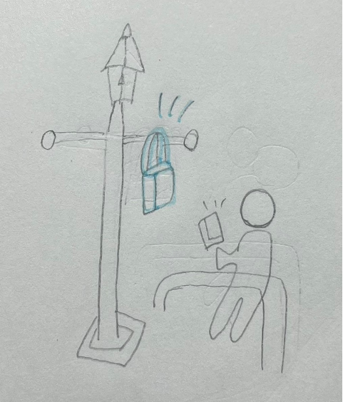
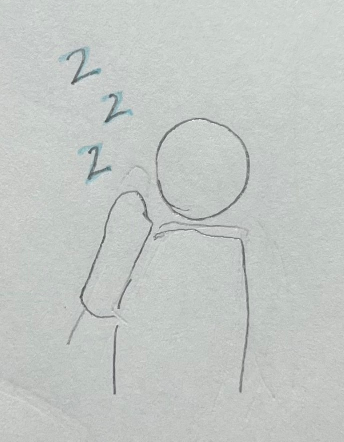
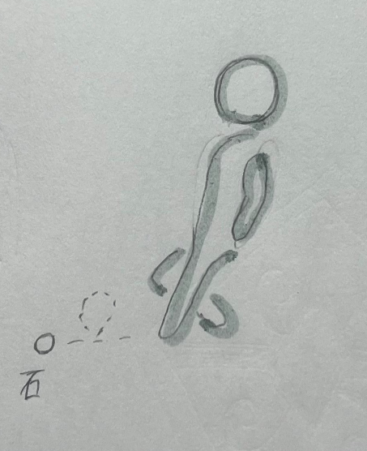

街灯に荷物をかける人

横浜駅のJR改札の前にある街灯にバックをかけている人がいた
「普通そんなとこにかける!？」と思ってしまい、面白いと思い選んだ。
また、そのすぐ横にあるポールに座っていて、そこの空間を有効活用しているようで面白かった。
「あーねむい」という人

駅を歩いている時に横を通りかかった６０代ぐらいの女性が
「あーー眠い」と言いながらあくびをしていた。
不思議な人雰囲気を纏っている人だと感じた。
石を蹴る人

25歳ぐらいの男性が石蹴りをしながら歩いていた。
見た目が真面目そうな人だったので、そのギャップが面白いなと思った。